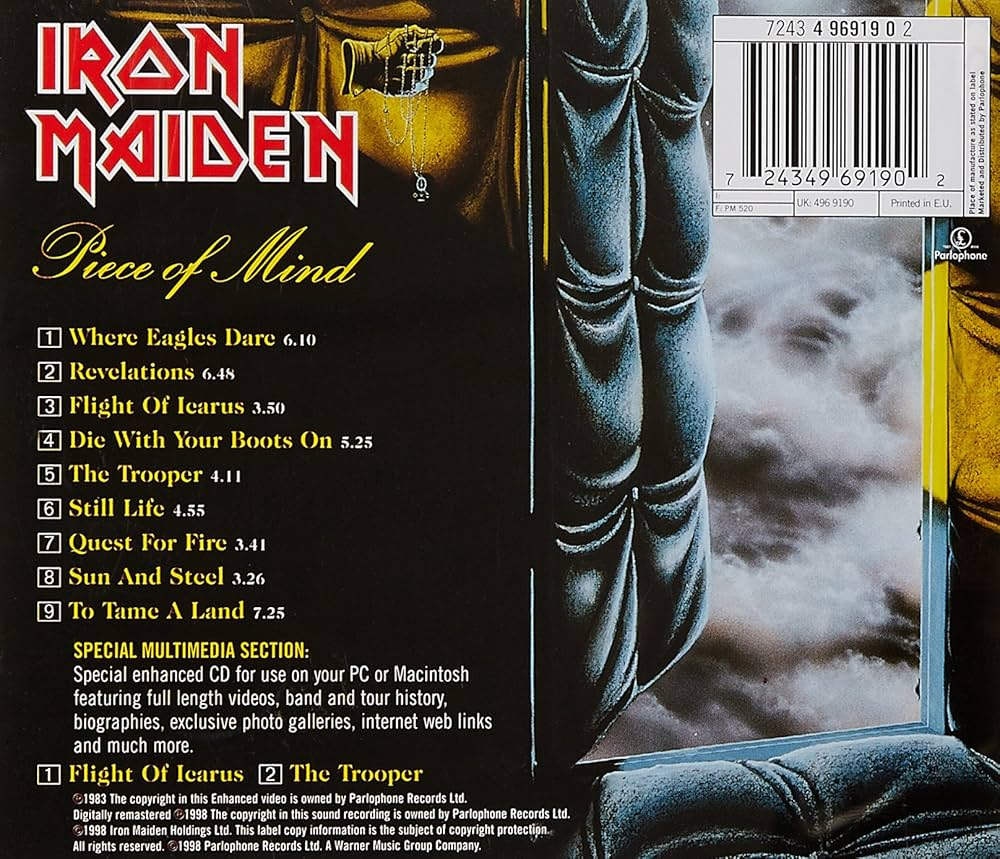

Músicas:
- Where Eagles Dare
- Revelations
- Flight of Icarus
- Die with Your Boots On
- The Trooper
- Still Life
- Quest for Fire
- Sun and Steel
- To Tame a Land

"Piece of Mind" é o quarto álbum de estúdio do Iron Maiden, lançado em 1983. O disco marcou a estreia de Nicko McBrain na bateria e consolidou a fase clássica da banda. Com faixas como "The Trooper", "Flight of Icarus" e "Revelations", tornou-se uma peça essencial do heavy metal.